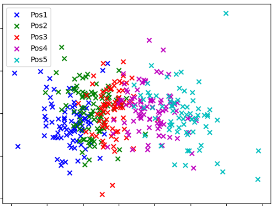
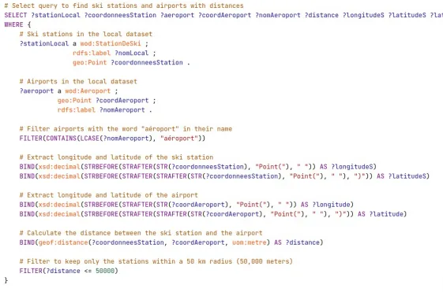
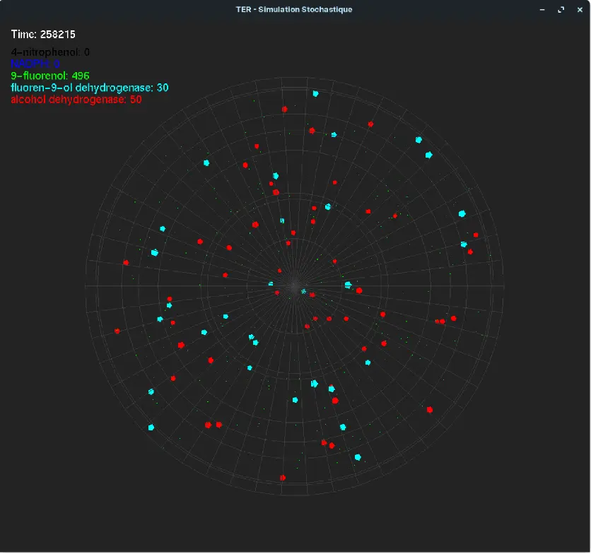
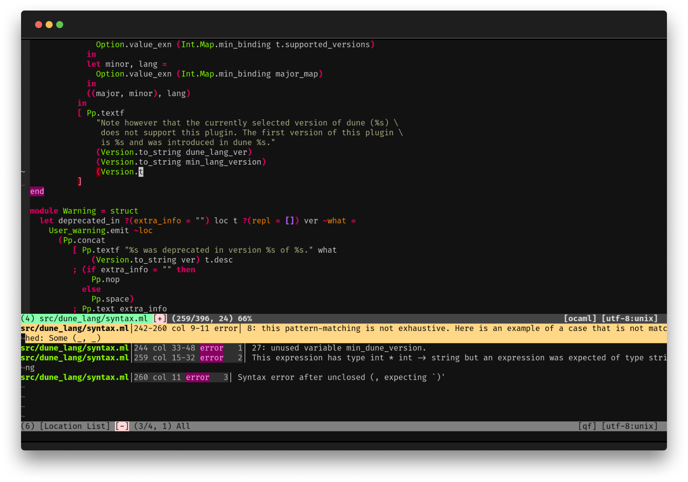

Altair Gym
A fitness solution combining wearable technology and mobile applications to enhance workout experiences through motion tracking and personalized feedback.
In collaboration with Manitas Bahri
Altair Gym | Website
This project consists of a responsive marketing website for Altair Gym, deployed on Vercel. The website presents the product, its features, and allows visitors to subscribe to newsletters managed via Supabase.
This project consists of a responsive marketing website for Altair Gym, deployed on Vercel. The website presents the product, its features, and allows visitors to subscribe to newsletters managed via Supabase.
The development used a monorepo architecture with pnpm, ensuring efficient dependency management and scalability.
Key features:
Responsive design: optimized for desktop, tablet, and mobile.
Newsletter subscription: integrated with Supabase for secure and efficient user management.
CI/CD pipeline: continuous integration and deployment to Vercel, enabling fast updates and version control.
Modern frontend stack: built with Next.js for optimal performance and SEO.
This project demonstrates a combination of full-stack development practices, modern deployment workflows, and user engagement features for a tech product launch.
Next.js
pnpm
Supabase
Vercel
CI/CD

Boat Booking Platform
Web platform for booking and renting boats between individuals and professionals, with search, booking management and a modern, responsive interface.
SeaScape is a comprehensive web application that allows individuals and professionals to book, rent and list boats.The aim of the project is to offer a smooth, secure and intuitive experience for exploring, comparing and booking boats according to various criteria.🔧 Main features:Dynamic catalogue of boats with filters by type (sailboat, yacht, catamaran, etc.), location, availability and price.Online booking system including date selection, availability check and rental confirmation.User area for managing bookings, tracking payments and publishing rental ads.Administrator page (optional depending on your implementation) for managing boats, users and transactions.Modern and responsive interface, designed for smooth navigation on desktop and mobile.💡 Objectives and learning:The project focuses on the design of a complete web architecture, including the management of a relational database and the implementation of a consistent front-back logic.It illustrates my ability to design an end-to-end web solution, from data modelling to user experience.
Next.js
Supabase
PostgreSQL

NBA Players Position Prediction 2 (largest dataset)
This project explores NBA data using data science techniques to uncover insights about player performance, team statistics, and trends over time. The analysis was conducted using Python, leveraging libraries such as Pandas, Matplotlib, and Seaborn for data manipulation and visualization.
🔍 What I Did:
Data Collection & Preprocessing
Loaded and cleaned the dataset to handle missing values and inconsistencies.
Conducted exploratory data analysis (EDA) to understand key player and team metrics.
Created new features to enhance the dataset and improve analytical insights.
Statistical & Visual Analysis
Analyzed player performance based on key metrics such as points, assists, rebounds, and efficiency.
Compared teams' performances across different seasons.
Used data visualization (histograms, scatter plots, heatmaps) to identify trends and correlations.
Insights & Findings
Identified key factors that influence player success and team wins.
Explored trends in NBA statistics over time, such as scoring evolution and the impact of three-point shooting.
Provided data-driven conclusions that could help in player evaluation and team strategies.
Python
Scikit-Learn
Numpy
Pandas
MatplotLib
Seaborn

NBA Players Position Prediction 1
This project explores NBA data using data science techniques to uncover insights about player performance, team statistics, and trends over time. The analysis was conducted using Python, leveraging libraries such as Pandas, Matplotlib, and Seaborn for data manipulation and visualization.
🔍 What I Did:
Data Collection & Preprocessing
Loaded and cleaned the dataset to handle missing values and inconsistencies.
Conducted exploratory data analysis (EDA) to understand key player and team metrics.
Created new features to enhance the dataset and improve analytical insights.
Statistical & Visual Analysis
Analyzed player performance based on key metrics such as points, assists, rebounds, and efficiency.
Compared teams' performances across different seasons.
Used data visualization (histograms, scatter plots, heatmaps) to identify trends and correlations.
Insights & Findings
Identified key factors that influence player success and team wins.
Explored trends in NBA statistics over time, such as scoring evolution and the impact of three-point shooting.
Provided data-driven conclusions that could help in player evaluation and team strategies.
Python
Scikit-Learn
Numpy
Pandas
MatplotLib
Seaborn

Geospatial analysis of ski resorts
Design of a Knowledge Graph linking ski resorts to airports located within a 100 km radius. Extraction, cleaning and geocoding of data, then querying the graph via SPARQL to visualise correspondences.
Python
GeoPandas
RDFLib
SPARQL
Wikidata

Datacamp Telecom SudParis VolcanicPrediction (Rank 17/180)
This project, developed as part of a DataCamp course, focuses on predicting volcanic eruptions using machine learning techniques. The goal is to analyze seismic and geophysical data to identify patterns that could help anticipate eruptions.
🔍 What I Did:
Data Exploration & Preprocessing
Loaded and cleaned the dataset to handle missing values and inconsistencies.
Performed exploratory data analysis (EDA) to understand key features and correlations.
Engineered relevant features to improve model performance.
Machine Learning Modeling
Trained various machine learning models to predict eruption probabilities.
Experimented with different algorithms, including decision trees, random forests, and logistic regression.
Tuned hyperparameters to optimize model accuracy and generalization.
Model Evaluation & Interpretation
Assessed model performance using metrics like accuracy, precision, recall, and F1-score.
Compared different models to identify the most effective approach.
Interpreted feature importance to understand which factors contribute most to eruption predictions.
Python
Pandas
Numpy
Scikit-Learn

Stochastic Simulation
This project is carried out as part of the first-year TER (Research Project) of the Master's in Data Science at Paris-Saclay University. The aim is to conduct a stochastic simulation of the evolution of chemical reactions involving enzymes and substrates.
A computer simulation that reproduces the movements of molecules inside cell vesicles. With complex, random and realistic interactions with enzymes.
C++
OpenGL
RapsTank Battle
This project focuses on network programming using the MQTT (Message Queuing Telemetry Transport) protocol, a lightweight messaging protocol widely used for IoT and real-time communication. The goal was to implement a publisher-subscriber architecture to enable efficient data exchange between devices.
🔍 What I Did:
MQTT Protocol Implementation
Used the paho-mqtt library in Python to implement an MQTT client.
Set up an MQTT broker (e.g., Mosquitto) to manage message exchanges.
Implemented publishers (data senders) and subscribers (data receivers).
Multi-Client Communication & Data Transmission
Established multiple MQTT clients communicating over different topics.
Configured QoS (Quality of Service) levels to ensure message reliability.
Managed real-time data exchange efficiently while handling network latency.
Testing & Optimization
Simulated and tested communication between multiple MQTT clients.
Optimized message payloads to minimize bandwidth usage.
Ensured stability, error handling, and reconnection mechanisms for network failures.
Python
Raspberry Pi OS
SSH
MQTT
Tkinter

Dashboard for student grades
Design of a JupyterLab extension allowing students to view their marks, averages, practical results and revisions via an interactive dashboard.
Python
JavaScript
GitLab
JupyterLab

Computational Biology
Python
Numpy
Pandas
MatplotLib
Scikit-Learn
CSV
PCA

Forbidden island game
Java
Model-View-Controller
Oriented Object Programming

Vector generation of fur
Processing

Mini ML Interpreter
Mini ML is a programming language designed for creating and running straightforward programs. It takes inspiration from the ML programming language and is implemented in OCaml. This language supports fundamental operations like basic arithmetic, boolean logic, and conditional statements. Additionally, it facilitates functions and recursion.
The project includes a lexer, parser, type checker, and interpreter. The lexer breaks down the input text into a list of tokens, the parser converts these tokens into an abstract syntax tree, the type checker verifies the correctness of expression types in the program, and the interpreter executes the program.
OCaml

Ants Simulation
C++

3D Ulam Spiral
Processing

Directed Graph Operations
Python

Discord Bot
Python

Puyo Puyo
C++

Human body management simulation game
Processing

City management simulation game
Processing